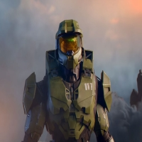
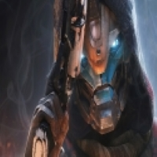

MasterChief
Master Chief Petty Officer John-117, more commonly known as Master Chief, is a SPARTAN-II commando of the UNSC Naval Special Warfare Command. After he served, he started Bunjy as the CEO.

Cayde 6
Cayde-6 was an Exo Guardian and the Vanguard for the Hunter class who was partnered with the Ghost Sundance. Cayde is serving in Destiny's army. Even though he still is active, he handles all the finances as Bunjy's CFO.